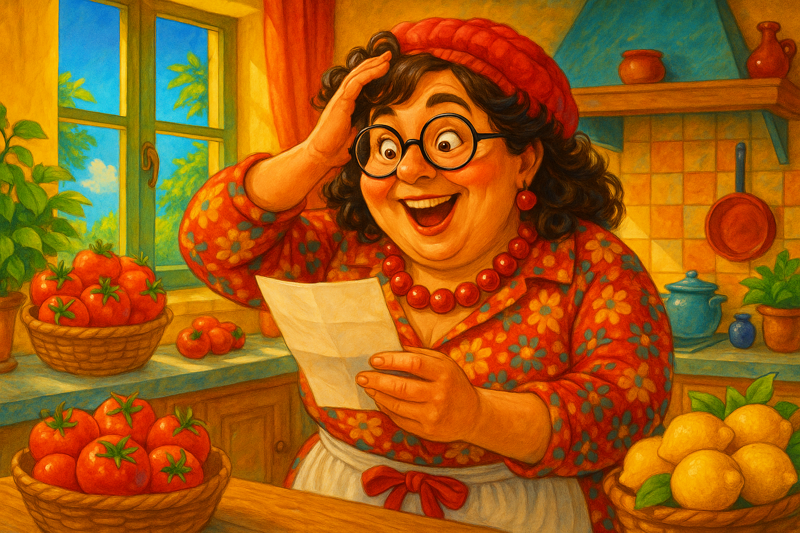
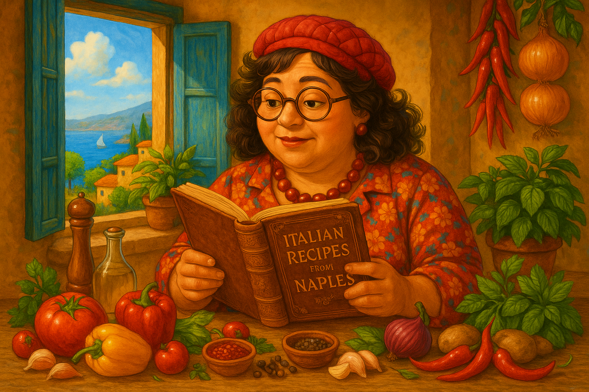
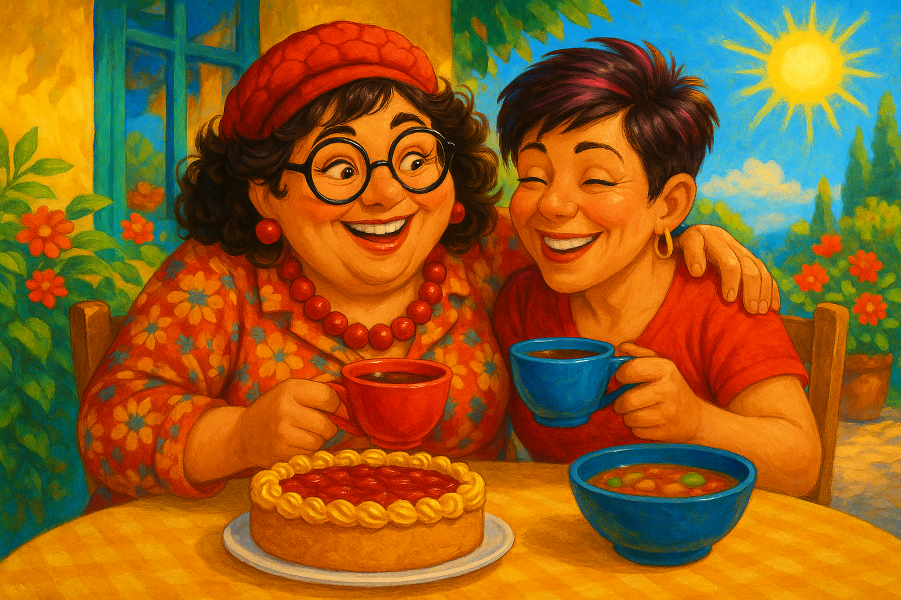
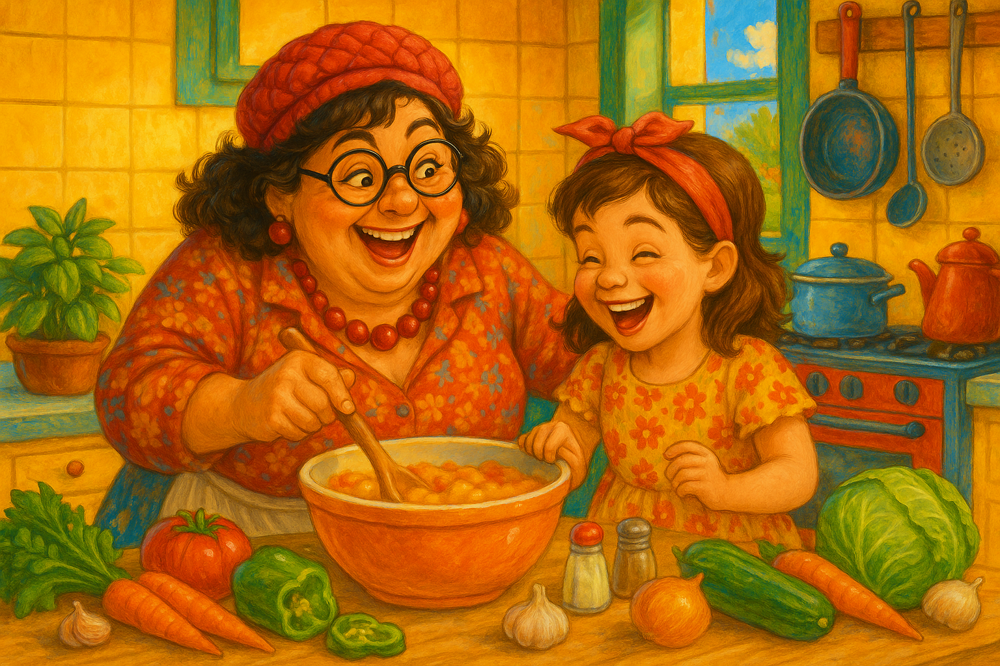
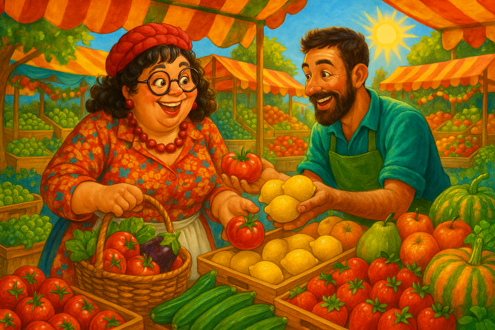
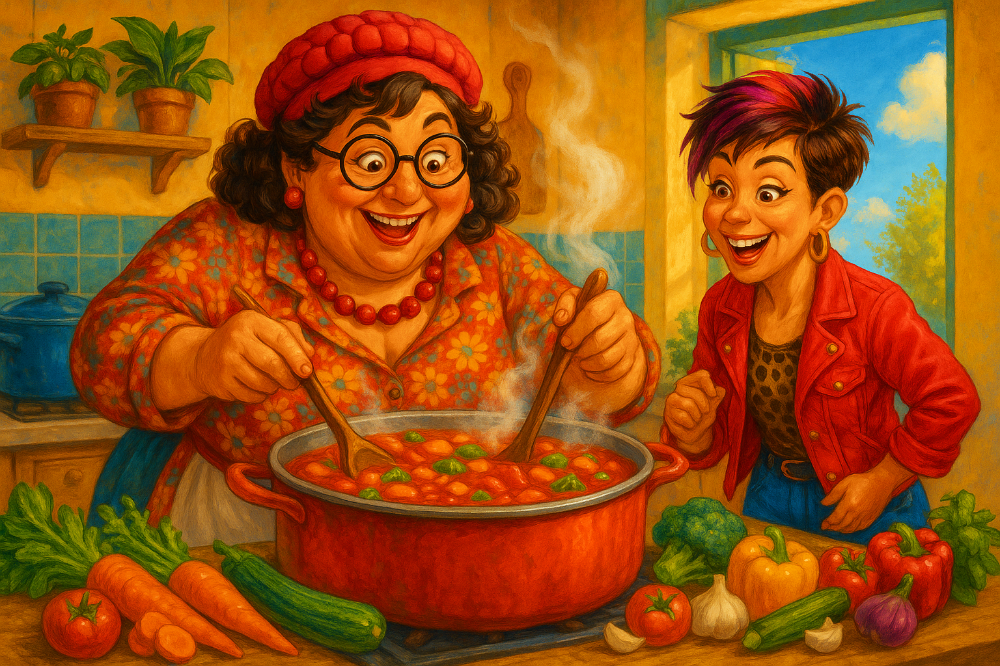
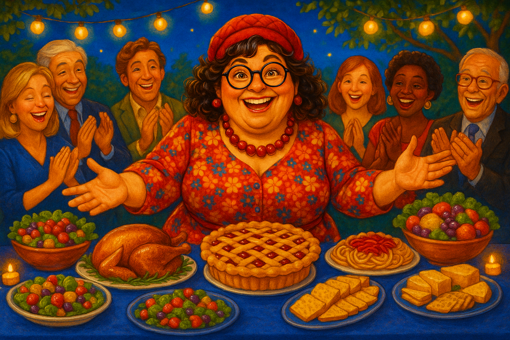

🔗 Неотделяемые глаголы — семья Греты
Приставка приросла намертво (be-/er-/ver-/ge-), в прошедшем нет ge-: bekommen → hat bekommen. 7 частей, словарь и 3 истории.
Части темы — тренажёр

Часть 1 — Приглашение
11 глаголов · beginnen · bekommen · verstehen · vermuten…
▶ Начать изучение →
Часть 2 — Почему согласилась
10 глаголов · vermeiden · ermöglichen · gehören · erfinden…
▶ Начать изучение →
Часть 3 — Giulia
10 глаголов · beantworten · verabreden · vereinbaren · übernehmen…
▶ Начать изучение →
Часть 4 — Лина
10 глаголов · besuchen · betreuen · erlauben · erteilen…
▶ Начать изучение →
Часть 5 — За продуктами
11 глаголов · erklären · wiederholen · bestellen · empfehlen…
▶ Начать изучение →
Часть 6 — Апельсин и суп
11 глаголов · gewinnen · bedanken · behalten · verbinden…
▶ Начать изучение →
Часть 7 — Вечер
10 глаголов · umkreisen · bezeichnen · unterstreichen · erledigen…
▶ Начать изучение →Словарь темы
📚 Словарь — все 73 глаголаИнфинитив · перевод · Perfekt · 🔊
Тексты по теме — читать